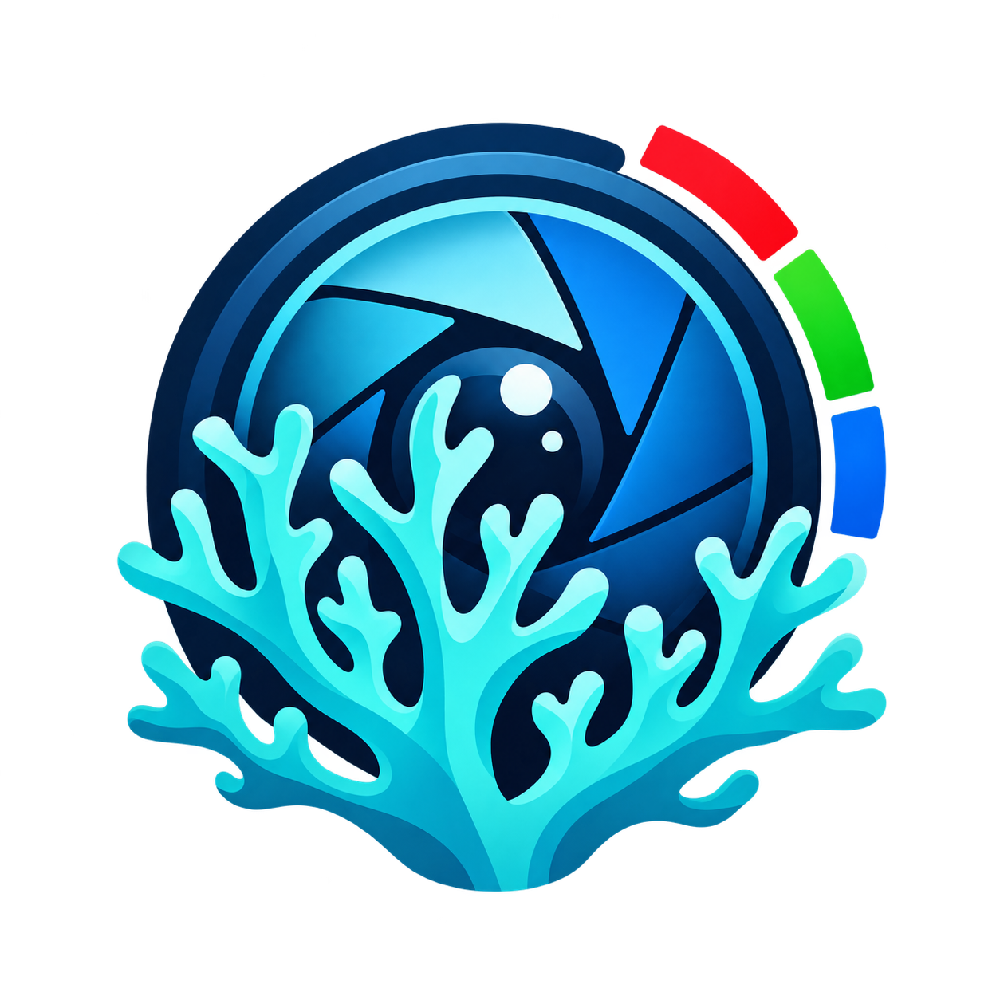

–/ 6
–
Unterrichtsregel: Score > 3 = gesund nach Farbregel. Keine umfassende biologische Diagnose.

Korallenfarben mit dem iPad untersuchen
Danach die Koralle mit mehreren Punkten umranden.
Unterrichtsregel: Score > 3 = gesund nach Farbregel. Keine umfassende biologische Diagnose.
–
–
ΔE76 zur jeweils nächsten Kartenfarbe; große Werte sprechen für eine unsichere Zuordnung.
Die Farben zeigen die zugeordnete Stufe, nicht die Originalfarbe.
Keine Referenzart ausgewählt.